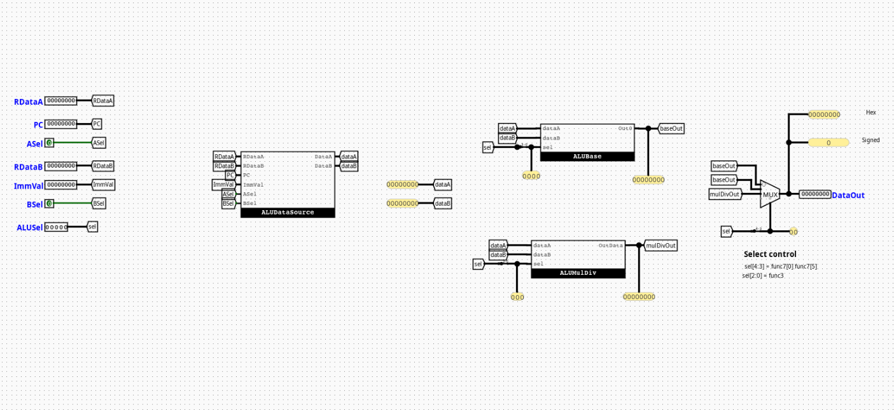

RiskVALU
Overview
The RiskVALU component serves as the central arithmetic, logical, and mathematical acceleration hub of an RV32I processor equipped with the M-extension (RV32IM). It encapsulates distinct functional submodules to handle basic arithmetic, data source routing, control signal extraction, and hardware multiplication/division.
- Purpose in CPU: Performs mathematical calculations, logical masking, barrel shifting, and hardware-accelerated integer multiplication, division, and remainder operations.
-
Role in datapath: Located squarely within the Execution (EX) stage, it accepts operands from the system register file or forwarding paths and generates results targeted for the Memory (MEM) or Writeback (WB) pipelines.
-
Source:
logisim/RiskVALU.circ
Interface
Inputs
| Signal | Width | Description |
|---|---|---|
RDataA |
32 bits | Raw data output from Register 1 (rs1). |
PC |
32 bits | Current program counter address forwarded from the fetch/decode stage. |
RDataB |
32 bits | Raw data output from Register 2 (rs2). |
ImmVal |
32 bits | Decoded and sign-extended immediate scalar block. |
ASel |
1 bit | Data routing selection control driving the Operand A multiplexer. |
BSel |
1 bit | Data routing selection control driving the Operand B multiplexer. |
ALUSel |
5 bits | Master operational selector bus derived from funct3 and funct7. |
Outputs
| Signal | Width | Description |
|---|---|---|
ALUOut |
32 bits | Final 32-bit aggregated calculation pipeline result. |
Output Logic (Core Definition)
Defines how the top-level outputs are derived based on internal multiplexing logic.
Rule-based definition
dataA= (ASel== 1) ?PC:RDataAdataB= (BSel== 1) ?ImmVal:RDataB- If
ALUSel[4](isM) ==0→ALUOut= Derived fromALUBaseusingALUSel[3:0] - If
ALUSel[4](isM) ==1→ALUOut= Derived fromALUMulDivusingALUSel[2:0]
Internal Design
The root RiskVALU architecture operates as a structural container that routes operands and aggregates results using four specialized internal submodules.
- Structure: Purely combinational circuit layout containing zero clocked registers, flip-flops, or internal execution state registers.
- Subcircuits used:
ALUDataSourceALUControlALUBaseALUMulDiv- Decoding / Mux Structure: Uses an initial pair of 2-to-1 32-bit multiplexers to select input operands, a bit-splitter to slice the control bus, and a final 2-to-1 32-bit multiplexer driven by the
isMflag to select between the standard or M-extension calculation results.
Operation
Step-by-step behavior:
- Inputs arrive: Data parameters (
RDataA,PC,RDataB,ImmVal) and control buses (ASel,BSel,ALUSel) land simultaneously at the input boundaries. - Decoding / selection occurs:
ALUDataSourceresolves the target operands, whileALUControlunpacks the execution selection fields. - Logic evaluates conditions:
ALUBaseandALUMulDivconcurrently evaluate the routed operands along parallel hardware paths. - Outputs are produced: The final multiplexer switches based on the
isMmode flag, propagating the selected result onto theALUOutchannel within the same combinational cycle window.
Pipeline Interaction
- Pipeline stage involvement: Sits completely within the EX (Execution) stage tracks.
- Signal propagation across stages: Gathers data straight from the ID/EX pipeline registers, allowing calculations to stabilize inside the clock phase before committing the stable state down to the EX/MEM pipeline buffer boundary.
- Dependencies: Relies heavily on upstream hazard/forwarding blocks to resolve structural data hazard contentions on operands before execution.
Examples
Example: MUL Instruction (M-Extension)
Inputs:
RDataA=0x00000003(3)RDataB=0x00000004(4)ASel=0,BSel=0ALUSel=10000(isM= 1,selMD= 000)
Outputs:
ALUOut=0x0000000C(12)
Limitations / Assumptions
- Assumes divide-by-zero criteria default cleanly to overflow presets (
0xFFFFFFFFor native standard definitions) without triggering separate pipeline traps or core hardware halts. - Shifter ports inside the core arithmetic modules explicitly discard input lines
dataB[31:5], parsing only the lower 5 bits for barrel shift configurations. - Purely combinational logic layout; contains no standalone clock lines or internal state memory registers.
Implementation Notes (Logisim)
- Built using standard Logisim components only.
- Decoder / mux / gate-based implementation with structural subcircuits.
- No external libraries or third-party logic dependencies.
- Signal widths map rigorously onto standard 1-bit control, 3-bit/4-bit selection buses, and 32-bit execution data registers.
Submodules
ALUDataSource
Coordinates raw operand routing configurations.
- Inputs:
RDataA(32-bit),PC(32-bit),RDataB(32-bit),Imm(32-bit),ASel(1-bit),BSel(1-bit) - Outputs:
dataA(32-bit),dataB(32-bit)
Logic Definition
- If
ASel==0→dataA=RDataA - If
ASel==1→dataA=PC - If
BSel==0→dataB=RDataB - If
BSel==1→dataB=Imm
ALUControl
Extracts architectural instruction parameters from the unified control selector to govern individual arithmetic slices.
- Inputs:
ALUSel(5 bits) - Outputs:
selBase(4 bits),selMD(3 bits),isM(1 bit)
Logic Definition
selBase=ALUSel[3:0]selMD=ALUSel[2:0]isM=ALUSel[4]
ALUBase
The fundamental calculation engine for standard RV32I arithmetic. It computes all basic integer arithmetic, shifts, and comparative branches simultaneously in parallel combinational tracks.
- Inputs:
dataA(32-bit),dataB(32-bit),sel(4-bit control selector) - Outputs:
Out0(32-bit computed result)
Operational Mapping
0000:dataA + dataB(Addition)0001:dataA << dataB[4:0](Logical Shift Left)0010:(dataA < dataB) ? 1 : 0(Signed Set Less Than)0011:(dataA <u dataB) ? 1 : 0(Unsigned Set Less Than)0100:dataA ^ dataB(Bitwise logical XOR)0101:dataA >> dataB[4:0](Logical Shift Right)0110:dataA | dataB(Bitwise logical OR)0111:dataA & dataB(Bitwise logical AND)1000:dataA - dataB(Subtraction)1101:dataA >>> dataB[4:0](Arithmetic Shift Right)
ALUMulDiv
The mathematical acceleration submodule that implements structural extensions for the RV32M standard instruction catalog.
- Inputs:
dataA(32-bit),dataB(32-bit),sel(3-bit functional selector) - Outputs:
Out0(32-bit evaluated result)
Operational Mapping
000:mul(Low-order 32 bits of product)001:mulh(High-order 32 bits of signed product)010:mulhsu(High-order 32 bits of product between signed A and unsigned B)011:mulhu(High-order 32 bits of unsigned product)100:div(Signed division quotient)101:divu(Unsigned division quotient)110:rem(Signed division remainder)111:remu(Unsigned division remainder)
Internal Execution Mechanics
- Pre-Processing Complement Blocks: Uses sign-bit inspection to convert negative inputs into positive magnitudes via two's complement inversion circuits before routing to the division/remainder units.
- Post-Processing Inversion Matrix: Applies a conditional post-execution structural two's complement inversion to the calculated division or remainder output if the tracking logic requires a negative result.
- Uses parallel Logisim hardware multipliers and dividers gathered into an 8-to-1 32-bit multiplexer.